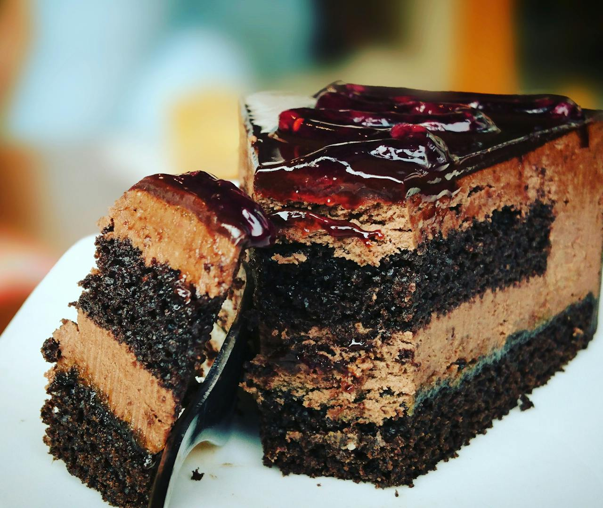

Greek Honey Cake

Back to Home page
Description
Greek Honey Cake is a moist, aromatic dessert soaked in a sweet honey syrup, infused with warm spices like cinnamon, cloves, and nutmeg.
Key Features
It typically features orange zest or juice for citrus brightness, nuts like walnuts for crunch, and olive oil or yogurt for tenderness. Baked in a single pan and drenched post-baking, it stays fresh for days.
Ingredients
- 1 cup honey
- 1 ¾ cups white sugar, divided
- ¾ cup water
- 1 teaspoon lemon juice
- 1 cup all-purpose flour
- 1 ½ teaspoons baking powder
- 1 teaspoon grated orange zest
- ½ teaspoon ground cinnamon
- ¼ teaspoon salt
- ¾ cup unsalted butter
- 3 eggs
- ¼ cup milk
- 1 cup chopped walnuts
Steps
- Combine honey, 1 cup sugar, and water in a saucepan; bring to a simmer and cook 5 minutes. Stir in lemon juice; bring to a boil and cook for 2 minutes. Remove from heat and let cool while you prepare the cake.
- Preheat the oven to 350 degrees F (175 degrees C). Grease and flour a 9-inch square baking pan.
- Combine flour, baking powder, orange zest, cinnamon, and salt in a bowl; set aside.
- Beat remaining 3/4 cup sugar and butter together in a large bowl until light and fluffy. Beat in eggs, one at a time. Beat in flour mixture, alternating with milk, beating just until incorporated; stir in walnuts. Pour batter into the prepared pan.
- Bake in the preheated oven until a toothpick inserted into center comes out clean, about 40 minutes.
- Remove cake from oven and poke holes over the surface with a toothpick. Slowly ladle the cooled honey syrup over cake. For best results, set cake aside for 4 to 6 hours to cool and absorb the syrup before slicing and serving.